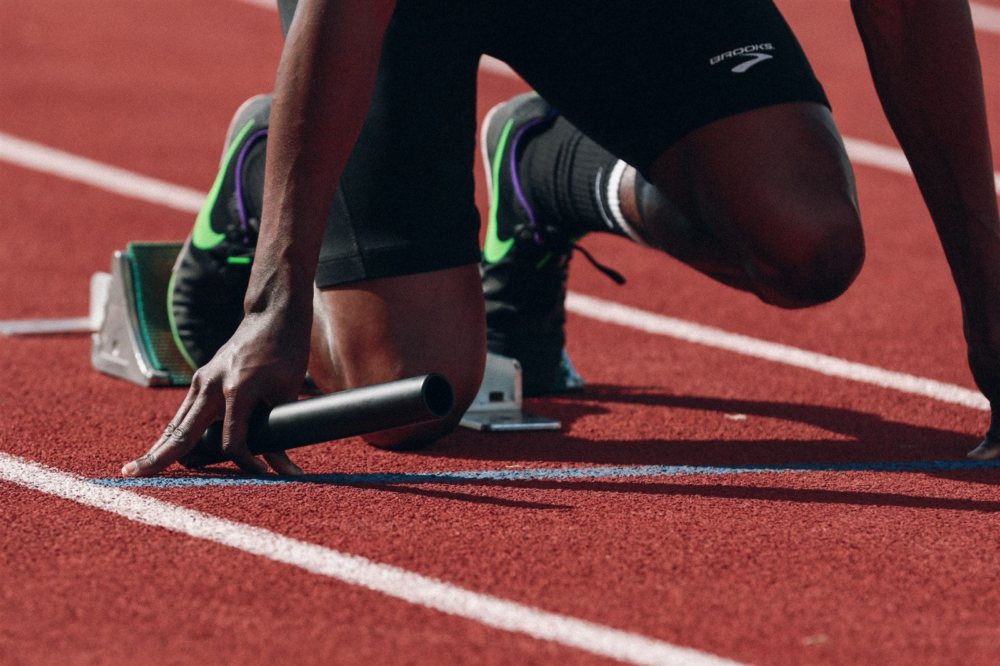
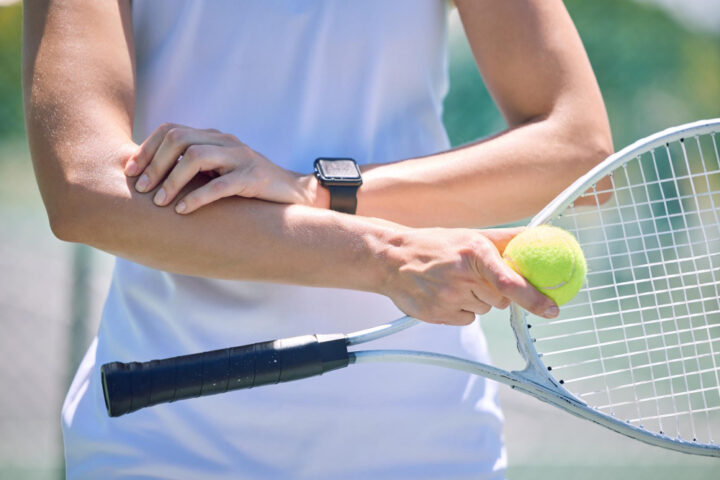
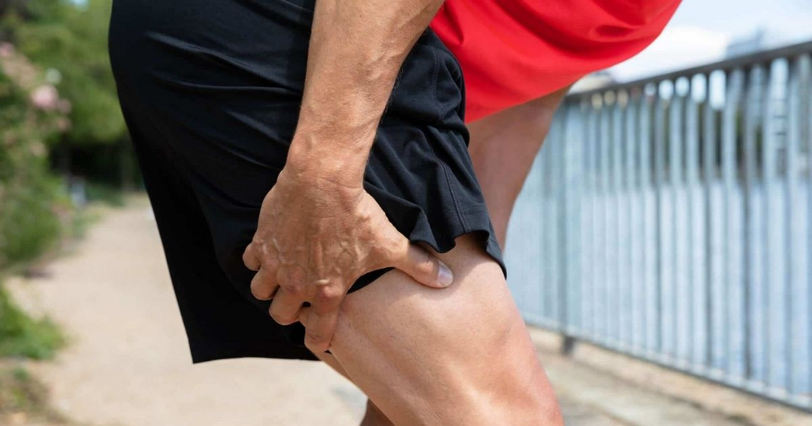

Come posso aiutarti
Ogni percorso parte da una valutazione approfondita: non propongo protocolli standard, ma piani di trattamento costruiti sulla tua condizione specifica.
Alcune tra le condizioni più seguite
Elenco indicativo e non esaustivo — ogni percorso viene definito dopo la valutazione, in base alla tua situazione specifica.

Return to Sport
Dalla fase acuta del trauma al rientro in campo o in pista: percorsi progressivi con test funzionali specifici per il tuo sport, per tornare a giocare con sicurezza.

Arto superiore
Spalla, gomito, polso e mano — instabilità, conflitto subacromiale, tendinopatie, riabilitazione pre e post-operatoria.

Arto inferiore
Anca, ginocchio, caviglia e piede — lesioni legamentose (es. LCA), tendinopatie, distorsioni, infortuni muscolari, riabilitazione post-protesi.
Non sai se posso aiutarti?
Scrivimi su WhatsApp: due righe per capire se e come posso aiutarti.
Fisioterapia sportiva
Gestione degli infortuni acuti e percorsi di ritorno alla pratica sportiva (return to sport). L'esercizio fisico è una fra le strategie che utilizzerò per accompagnare la tua ripresa dell'attività sportiva, che sia il rientro in campo o in pista.
Riabilitazione pre e post-operatoria
Percorsi graduali prima e dopo interventi (es. ricostruzione LCA, protesi, riparazioni tendinee) o traumi, per recuperare in sicurezza forza, mobilità articolare e controllo del movimento.
Fisioterapia domiciliare
Trattamento per chi ha difficoltà a spostarsi, mantenendo la stessa qualità di valutazione e trattamento di una seduta in studio.
Terapia manuale e rieducazione funzionale
Tecniche manuali, esercizio, taping, bendaggio e rieducazione del gesto motorio, per un recupero che non si limita a far passare il dolore ma che restituisce funzione.
Non sai se posso aiutarti?
Scrivimi per un confronto informale, oppure prenota direttamente una prima visita.